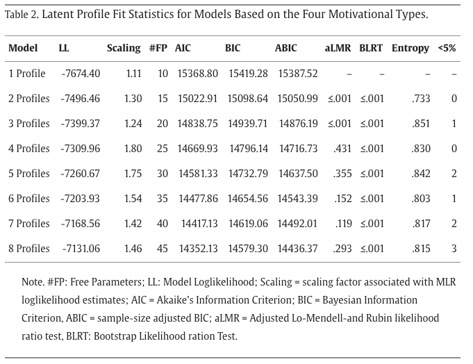

Latent Profile Analysis (LPA) and related mixture models identify hidden subgroups in your data. Instead of assuming everyone in your sample comes from one population, LPA discovers distinct profiles — groups of people who share similar patterns of characteristics. This is essential for person-centered research in psychology, education, and social science.
Basic understanding of means, standard deviations, and regression. Familiarity with the concept of probability distributions is helpful but not required. We build up from simple clustering to model-based classification step by step.
R with tidyLPA and mclust packages for mixture models; Mplus is the gold standard for latent variable models in social science. Python alternatives include scikit-learn's GaussianMixture. All examples provided in R.
R 搭配 tidyLPA 和 mclust 包进行混合模型；Mplus 是社会科学潜在变量模型的黄金标准。Python 替代方案包括 scikit-learn 的 GaussianMixture。所有示例均用 R 提供。
"What types of motivation patterns exist among students?"
焦点：识别不同的个体亚组
假设：总体是异质的——存在不同的潜在亚组
举例：LPA、LCA、聚类分析
"学生中存在哪些不同的动机组合模式？"
Part 1 · Slide 2
Person-Centered Analytical Methods
以个体为中心的分析方法
Cluster Analysis
聚类分析
Distance-based grouping (e.g., K-means)
No underlying statistical model
No formal test for optimal clusters
Hard assignment only
基于距离的分组（如 K-means）
没有底层统计模型
没有正式的最优簇数检验
只能硬分类
Today's Focus
本页重点
LPA
Continuous indicators
Model-based (Finite Mixture Model)
Statistical fit indices for class enumeration
Probabilistic assignment
连续型指标
基于模型（有限混合模型）
有统计拟合指标来确定类别数
概率性分类
LCA
Categorical indicators
Same framework as LPA
Item response probabilities instead of means
Probabilistic assignment
分类型指标
与 LPA 同一框架
用项目反应概率代替均值
概率性分类
Part 1 · Slide 3
How LPA Works: Mixture Models
LPA 的工作原理：混合模型
LPA is built on a Finite Mixture Model: observed data is a mixture of K normal distributions, each representing a hidden subgroup. Using the EM algorithm, LPA infers how many subgroups exist, the mean and variance of each on each indicator, and each person's probability of belonging to each subgroup.
LPA 建立在有限混合模型之上：观测数据是 K 个正态分布的混合，每个分布代表一个隐藏的亚组。通过 EM 算法，LPA 推断出有多少个亚组、每个亚组在每个指标上的均值和方差，以及每个个体属于各亚组的概率。
Overlapping Gaussians
重叠的正态分布
Three profiles (red, gold, tea) overlap. Each person's scores are drawn from one of these distributions.
三个剖面（红、金、茶色）重叠。每个人的得分来自这些分布中的一个。
Probabilistic Classification
概率性分类
Each individual has a probability of belonging to each class — not hard assignment. Classification uses the highest posterior probability.
每个个体都有属于每个类别的概率——不是硬性分配。最终分类取后验概率最高的类别。
e.g., a student may have posterior probabilities of .82, .13, and .05 for Profiles 1, 2, and 3 — they would be assigned to Profile 1.
Analogy: A student has 82% probability of belonging to Profile 1, 13% to Profile 2, 5% to Profile 3. We assign them to Profile 1, but acknowledge 18% uncertainty. This is softer than hard clustering (like k-means) which forces 100% membership.
BIC (Bayesian Information Criterion) and BLRT (Bootstrapped Likelihood Ratio Test) allow systematic model comparison. Entropy measures classification precision (0–1); values > .80 indicate good quality (Nylund et al., 2007).
BIC（贝叶斯信息准则）和 BLRT（自助似然比检验）可用于系统性的模型比较。Entropy 衡量分类精度（0–1），> .80 表示分类质量好（Nylund et al., 2007）。
BIC: Lower = better. It measures model fit quality minus a "complexity tax" — penalizes adding more classes to prevent overfitting. Think of it as: how well does the model explain the data, accounting for how complicated it is?
Lower values indicate better fit. Look for the "elbow" where the decrease slows down. Penalizes model complexity.
较低的值表示拟合更好。寻找下降趋缓的"拐点"。惩罚模型复杂度。
BLRT
Bootstrapped Likelihood Ratio Test
自助似然比检验
Most accurate test across conditions. Significant p-value (< .05) means k classes fit better than k-1. Keep adding classes until p ≥ .05.
在各种条件下最准确的检验。p < .05 表示 k 个类别优于 k-1 个。继续增加直到 p ≥ .05。
ENT
Classification Quality
分类质量
Ranges 0–1. Values > .80 indicate clear class separation. Close to 1 = clean assignment. But DO NOT use it for class selection alone.
范围 0–1。> .80 表示清晰的类别分离。接近 1 = 清晰归属。但不要仅用它来选择类别数。
Decision Rule: When indices disagree, prioritize BLRT + BIC, combined with theoretical interpretability. Class sizes should be at least 5–8% of your sample to avoid unstable profiles.
Practical Tips.Sample size: N ≥ 300–500 (Nylund-Gibson & Choi, 2018). Random starts: ≥ 500 to avoid local solutions. Smallest class: ≥ 5–8% of sample. Entropy: > .80 indicates good classification — but do NOT use it to select K.
Wang, C. K. J., Liu, W. C., Nie, Y., et al. (2017). Latent profile analysis of students' motivation and outcomes in mathematics: An organismic integration theory perspective. Heliyon, 3(6), e00308. Open Access
Wang, C. K. J., Liu, W. C., Nie, Y., et al. (2017). 学生数学动机和成果的潜在剖面分析. Heliyon, 3(6), e00308. 开放获取
Core question: Are there distinct subgroups of students characterized by unique combinations of motivations — and do these profiles predict different academic outcomes?
核心问题：学生中是否存在具有独特动机组合的不同亚组？这些剖面能否预测不同的学业结果？
RQ
Theoretical Framework
理论框架
Organismic Integration Theory (OIT), a sub-theory of Self-Determination Theory, posits that motivation is not "high vs. low" but a continuum — from external regulation to intrinsic motivation. Each student has a simultaneous score on all four types, creating a unique combination pattern. Variable-centered methods miss this; LPA captures it.
有机整合理论（OIT）是自我决定理论的子理论，认为动机不是"高 vs. 低"而是一个连续体——从外部调节到内在动机。每个学生在四种类型上同时有得分，形成独特的组合模式。以变量为中心的方法会遗漏这点；LPA 能捕捉到。
01
Sample
样本
N = 1,151 secondary students (age 13–17, M = 14.69) from 5 schools in Singapore. 679 males, 444 females, 28 unreported.
At least 4 distinct profiles will emerge based on OIT motivation types.
基于 OIT 动机类型至少会出现 4 个不同的剖面。
H2
Hypothesis 2
假设二
More autonomous profiles → higher effort, value, competence, and extra time on math.
更自主的剖面 → 更高的努力、价值感、胜任感和数学学习时间。
Part 2 · Slide 2
Step 1: Model Comparison & Class Enumeration
步骤一：模型比较与类别数确定

Table 2. Latent profile fit statistics for models with 1–8 profiles based on the four motivational types.
表 2. 基于四种动机类型的 1–8 个剖面模型的拟合统计量。
Decision Rules (Nylund et al., 2007; Nylund-Gibson & Choi, 2018). BIC: Lower is better — look for the "elbow" where decline slows. BLRT: Most accurate across all conditions — significant p means K > K−1. aLMR: Adjusted Lo-Mendell-Rubin test — non-significant p suggests current K is sufficient. When indices disagree: Prioritize BIC + BLRT, combined with theoretical interpretability and class size. Here, the 4-profile solution was selected: the aLMR became non-significant beyond 4 profiles, fit improvements were marginal, and each profile was theoretically interpretable.
BLRT: Tests whether k classes fit significantly better than k-1. If p < .05, you should add another class. Keep adding until the test says "no significant improvement."
决策规则（Nylund et al., 2007; Nylund-Gibson & Choi, 2018）。BIC：越低越好——寻找下降趋缓的"拐点"。BLRT：在所有条件下最准确——p 显著说明 K 优于 K−1。aLMR：调整后的 Lo-Mendell-Rubin 检验——p 不显著说明当前 K 已足够。指标不一致时：优先考虑 BIC + BLRT，结合理论可解释性和类别大小。本研究选择了 4 剖面方案：aLMR 在 4 剖面之后变得不显著，拟合改善微弱，且每个剖面理论上可解释。
BLRT：检验 k 个类别是否显著优于 k-1 个。如果 p < .05，应该多加一个类别。继续添加直到检验说"没有显著改善"。
Result: The 4-profile solution was selected. The aLMR p-value became non-significant (p = .12) beyond 4 profiles, indicating that adding a 5th profile did not significantly improve the model. All other indices agreed: BIC showed an elbow at k=4, and each of the four profiles was theoretically meaningful and interpretable.
Near-average external regulation but very low introjected, identified, and intrinsic motivation (n = 67)
外部调节接近平均水平，但内摄调节、认同调节和内在动机都很低（n = 67）
Near 5% threshold — may be unstable with smaller samples
接近 5% 阈值——在较小样本中可能不稳定
10.2%
Externally Driven
外部驱动型
High external & identified regulation, but very low intrinsic motivation — regulated by external demands (n = 118)
高外部调节和认同调节，但内在动机很低——受外部要求驱动（n = 118）
50.7%
Autonomous
自主型
High identified regulation & intrinsic motivation — the most self-determined and largest group (n = 584)
高认同调节和内在动机——最具自我决定性、也是最大的群体（n = 584）
33.2%
Moderate
中等型
Low identified regulation & intrinsic motivation with moderate external and introjected regulation (n = 382)
低认同调节和内在动机，中等外部调节和内摄调节（n = 382）
Reading Profile Plots. Focus on the shape of the line (the pattern across indicators), not just absolute levels. Name each profile based on its most distinctive features.
Do the profiles differ on meaningful academic outcomes?
这些剖面在有意义的学业结果上是否存在差异？
Figure 2. Outcome differences across four profiles (Hrs = Math Study Time, Effort = Self-Reported Effort, Value = Task Value, Comp = Perceived Competence).
The Autonomous profile (P3) consistently outperformed all other groups across every outcome: effort (3 > 2 > 4 > 1), task value (3 > 2 = 4 > 1), perceived competence (3 > 4 > 2 = 1), and math study hours (3 > 4 = 2 = 1). High autonomous motivation led to the most adaptive outcomes.
Effort showed a clear gradient across profiles: P3 > P2 > P4 > P1. Notably, the Externally Driven group (P2) reported higher effort than the Moderate group (P4), suggesting external pressure can sustain effort — but the Autonomous group's effort still surpassed all others.
The Externally Driven profile (P2) showed no advantage in perceived competence over the Low Motivation group (P1), despite P2's higher external and identified regulation (2 = 1). In contrast, even the Moderate group (P4) outperformed P2 in competence, suggesting that intrinsic interest — not external pressure — is essential for building academic confidence.
Other: Multilevel LCA/LPA, factor mixture models, Bayesian estimation for small samples.
潜在转变分析（LTA）——追踪个体如何随时间在剖面之间转变，估计转变概率。
增长混合模型（GMM）——识别不同的发展轨迹类别（如上升、稳定、下降）。
其他：多层次 LCA/LPA、因子混合模型、小样本的贝叶斯估计。
Part 3 · Slide 2
References & Software
参考文献与软件
01
Beginner Guide
Nylund-Gibson, K., & Choi, A. Y. (2018). Ten frequently asked questions about latent class analysis. Translational Issues in Psychological Science, 4(4), 440–461. DOI
02
Fit Indices
Nylund, K. L., Asparouhov, T., & Muthén, B. O. (2007). Deciding on the number of classes in LCA and GMM: A Monte Carlo simulation study. Structural Equation Modeling, 14(4), 535–569. DOI
03
Multi-Group
Morin, A. J. S., Meyer, J. P., Creusier, J., & Biétry, F. (2016). Multiple-group analysis of similarity in latent profile solutions. Organizational Research Methods, 19(2), 231–254. DOI
04
Applied Example
Wang, C. K. J., Liu, W. C., Nie, Y., et al. (2017). Latent profile analysis of students' motivation and outcomes. Heliyon, 3(6), e00308. Open Access
M+
Mplus
Gold standard. Most flexible, best support for LPA/LCA.
R
R — tidyLPA
Free, user-friendly. Good for learning and basic analyses.
Py
Python — sklearn
Gaussian Mixture. Lacks BLRT/entropy but adequate for exploration.